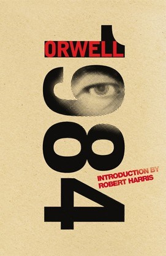

Джордж Орвелл "1984"
Антиутопія англійського письменника Джорджа Орвелла, написана 1948 року (у назві роману цифри 4 і 8 переставлені місцями) й опублікована 1949-го. Роман розповідає історію Вінстона Сміта і його деградації під впливом тоталітарної держави, у якій він живе. Є найвідомішою і найцитованішою антиутопією у літературі і стоїть в одному ряду з «Прекрасним новим світом» Олдоса Гакслі і «451° за Фаренгейтом» Рея Бредбері.